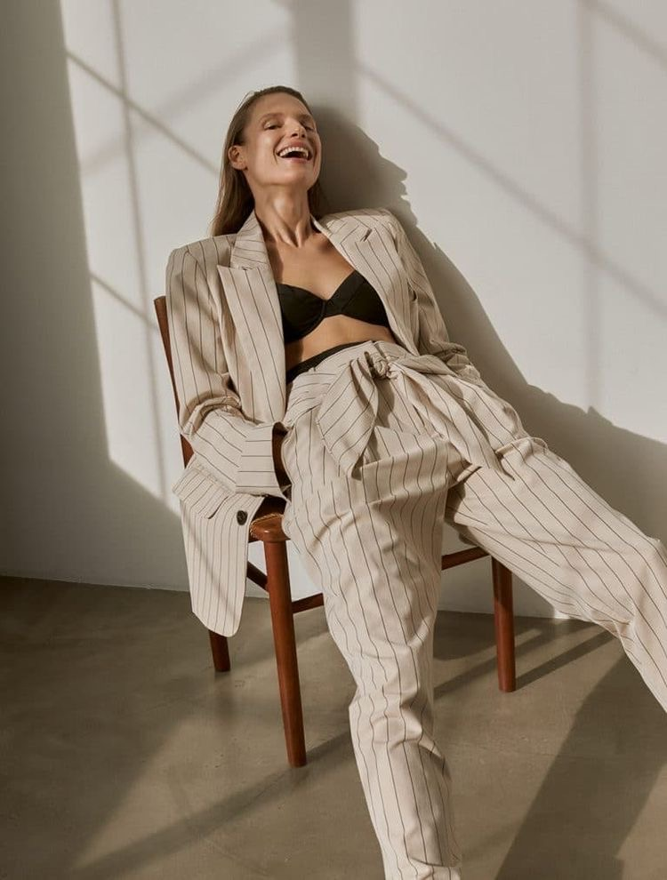
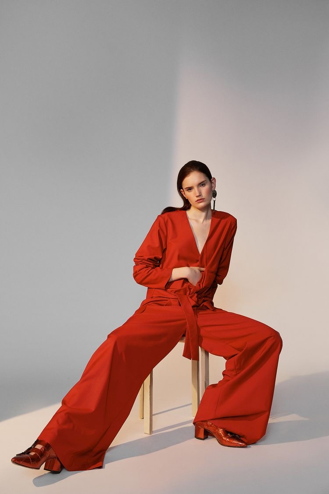

Welcome to My Vintage Fashion Blog My name is Audrey Alicia I'm a vintage fashion blogger/writer, the creator of
It's Beyond My Control vintage fashion blog with a modern twist. Love, wear and write about vintage fashion
I like to write as though I'm having a conversation with women who equally share my passion for vintage fashion,
as well as those who are only starting their adventure with vintage and would like to get an idea of how to mix
something. My motto is; quality over quantity!

